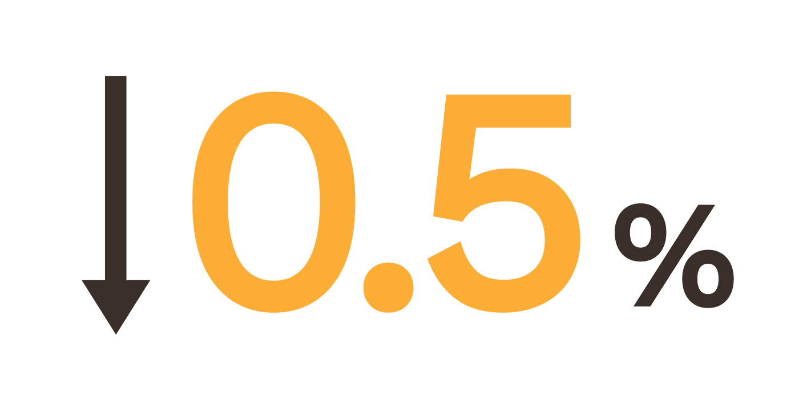
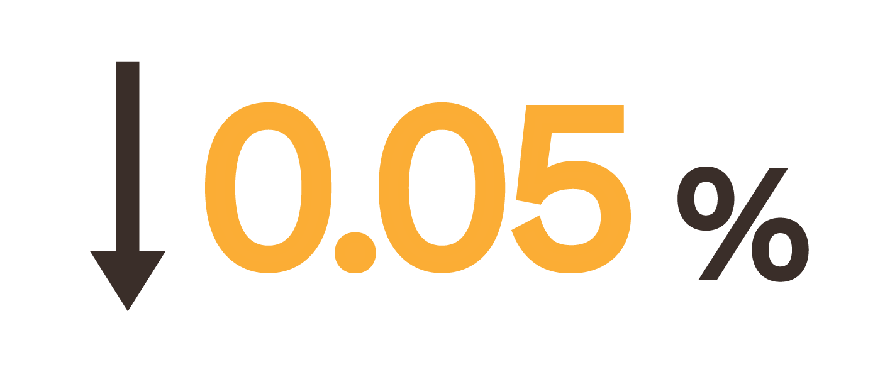

What is Low-Alcoholic Beer?
Low-alcoholic beer is beer that contains very little to no alcohol.
One method involves heating the beer, but this can significantly alter the flavor. Sometimes beer is heated inside a powerful vacuum that lowers the boiling point to preserve its taste.
Another method involves straining out the alcohol using a filter so fine that only water and alcohol can pass through. Liquid is then added back to the remaining ingredients.
Once the alcohol is removed, the beer is flat. Carbon dioxide must be added to carbonate it, much like what happens with soda.
Low-alcohol beer is also known as light beer, non-alcoholic beer, small ale , or near beer.
Categories of Low-Alcoholic Beer
Countless non-alcoholic beers are available, but they can all be divided a few categories based on the amount of ABV (alcohol by volume)
Light Beer

Beer with reduced caloric content compared to regualr beers. Light beers are marketed primarily to drinkers who wish to manage their calorie intake
2.6%–4.0% ABV
Non-Alcoholic Beer
Containing little or no alcohol (less than 0.5% ABV). It is classified as a "cereal beverage."
below 0.5% ABV
Alcohol Free
Sparkling apple cider, soft drinks, and juice naturally contain trace amounts or no alcohol. Some fresh orange juices are above the UK 'alcohol free' limit of 0.05% ABV, as are some yogurts and rye bread.
below 0.05 ABV